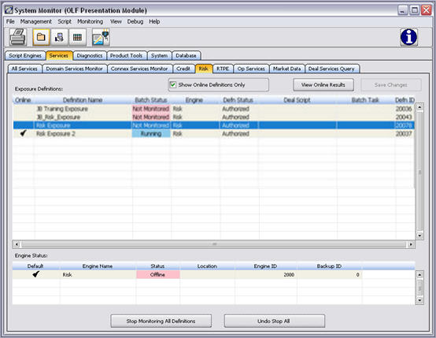
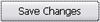

System Monitor - Services – Risk
Overview
The System Monitor – Services tabs work with the Services Manager module. Many of the components viewed in this tab have been previously configured in the Services Manager and the Risk Manager.
Within this screen, Risk exposure definitions may be brought on and offline. Risk definition and engine details, including status, may also be viewed in this screen.
This screen consists of the Exposure Definition and Engine Status panels. The Exposure Definition panel contains summary risk definition data. This panel also includes the functionality to view the Risk Online Results window which includes the ability to view and edit the details of the selected exposure definition as well as view the risk facility details.
The Engine Status panel provides information about the credit engine. This panel of data is view-only and cannot be altered from the System Monitor. Changes to engines are made in the Services Manager module.
Access to this window is controlled by Security Privilege #29220, Access Risk Tab.
See Also
Accessing This Window/Screen
To access this window:
- Start the OpenLink System.
- From OpenLink Central, click the System Monitor icon

- Select the Services tab.
- Select the Risk sub-tab.
The following screen displays:

Other Ways to Access This Window/Screen
The module may also be launched as a service. From OpenLink Central, navigate the menu icon and select Launch Available Services. Select System Monitor from the list box.
Menu Items
This window contains the same menu items as the System Monitor. Menu item availability depends upon the tab being accessed.
Buttons
This window contains the same toolbar buttons as the System Monitor. This tab includes the following buttons:
|
Button |
Description |
|
|
Selecting this button displays the Risk Online Results window for the selected definition. This window contains the details of the selected risk exposure definition. |
|
 |
Saves changes to the exposure definition’s online status. |
|
|
Selecting this button halts the exposure definition monitoring process. |
|
|
Selecting this button re-starts monitoring the exposure definition(s). |
Exposure Definition Panel
Fields
This panel contains the following fields:
|
Field |
Description |
|
Show Online Definitions Only |
Selecting this box filters the risk exposure definitions shown in the table to show only those definitions that are online. |
|
Online |
Selection of this checkbox, in conjunction with the Save Changes button, brings the indicated risk exposure definition online. |
|
Definition Name |
The user-assigned identifier of the selected risk exposure definition. |
|
Batch Status |
Displays the standing of the task being used to process an exposure definition. |
|
Engine |
The system running the selected risk exposure definition. |
|
Defn Status |
Displays the standing of the selected risk exposure definition. |
|
Deal Script |
Displays the name of the plug-in/script associated with the exposure definition. |
|
Batch Task |
The task needed for batch processing. This task calls the “Deal Script” in order to populate risk exposures when definitions are started. |
|
Defn ID |
The unique, system-assigned identifier given to a risk exposure definition. |
Right-Click Menu
Right-clicking on any row within the table returns the following menu items:
|
Item |
Description |
|
Start/Restart Monitoring |
Brings the selected risk exposure definition online to be monitored. |
|
Stop Monitoring |
Takes the selected risk exposure definition offline and ceases to monitor it. |
|
View Online Results |
This item has the same functionality as the View Online Results button. |
|
View Batch Execution Log |
Opens the Batch Execution Log window. This window contains details of the tasks and scripts that run as part of the Batch Task. |
Engine Status Panel
Fields
This panel contains the following fields:
|
Field |
Description |
|
Default |
A check mark in this field indicates that the engine running the definition is the default engine. When the check mark indicator is absent, the definition is being run by an alternate engine. |
|
Engine Name |
The name of the system running the credit definition. |
|
Status |
The standing of the engine. |
|
Location |
The name of the machine hosting the engine. |
|
Engine ID |
The unique, system-designated engine identifier. |
|
Backup ID |
The unique, system-designated identifier for the risk backup engine. |
Right-Click Menu
Right-clicking on an engine row within the table returns the following menu items:
|
Item |
Description |
|
View Raw Engine Data |
Opens the Raw Engine Data window. This window provides access to the raw data within the engine. This data is generally used for debugging purposes. |
Column Header Menu
To modify a table’s configuration, right-click any column header. The Column Header Menu displays.